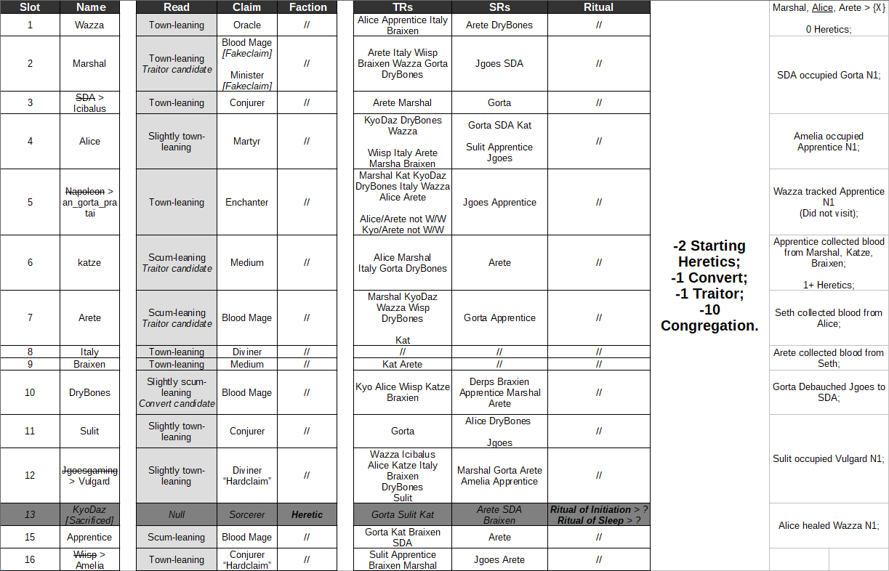

They have been posting in a less agenda focused way then I’d expect from convert
So I’m going to change my mind on that read
Convert is up in the air in my mind
I’m noticing Alice was kinda soft defending katze a lot
So are you thinking Alice was the conversion target, then? I don’t think she’s a traitor and I don’t think she’s groupscum because I think groupscum Alice would push a lot more agenda. Still, isn’t that kinda too obvious? I would prefer to just kill her, not convert her.
Also, wasn’t she the one pushing on Apprentice?
Not going to lie, convert hunting seems like a giant pain in general. I thought I’d enjoy this mechanic but I’m really not.
I’m not really sure
Convert could realistically be anyone
Yep, which is why this is just agonizing.
I want to see how she votes today. She didn’t jump on Amelia’s wagon that is as scummy that it can possibly be, which is good but also not really AI. Lets see if people are going to react to it, because Wazza isn’t doing much.
I’d say that’s likely due to this chat.
Can’t reply in the cookie thread since there’s a possibility of angleshooting.
1 Like
Spectating with you has been a blast so far honestly, I’m really liking that we are able to maintain a fast paced discussion + I know that you are actually experienced with FMs, so seeing your thought process is fascinating 
Thanks
I get a bit stressed by FM games as of recent, but it’s still enjoyable to talk about.
1 Like
Anstreim why did you even say you were not fit for this in signups thread.
Would love to see you play some game.
3 Likes
0 FM experience and I really don’t want to be that type of a new player that joins and ruins the fun for everyone. I want to be semi-competent and at least understand what is going on before signing up for anything.
Hearing this from you is really encouraging. Thank you.
Everyone started with 0 actual FM experience, obviously.
You wouldn’t have ruined anything, unless you were to troll around or something (which I don’t think you would).
2 Likes
True, but I’ve seen a lot of these players around – most of them are pretty experienced.
And yeah, trolling or messing around isn’t really something that I’d be willing to do.
Some more spreadsheet madness and general thoughts.
Last VC for our reference:
https://forum.imperium42.com/t/fm-ritual-mafia-iv-day-2-lynch-phase-14-16/81237/9363?u=anstreim
I’m still a firm believer of Apprentice being the lynch over Amelia today. Amelia’s reaction to being pushed to L-1 was good, as I would expect scum to self-hammer there:
https://forum.imperium42.com/t/fm-ritual-mafia-iv-day-2-lynch-phase-14-16/81237/9365?u=anstreim
https://forum.imperium42.com/t/fm-ritual-mafia-iv-day-2-lynch-phase-14-16/81237/9370?u=anstreim
Not to mention that so far, the only reasoning to push her over Apprentice has been her lackluster ISO and suspicion that she didn’t really visit Apprentice and the blood he collected was all pure, but that’s far too tinfoily for me.
SDA > Icibalus is looking somewhat better, but I cannot ignore this slot’s posts before replacement. The Traitor “RT” is still scummy and it will remain scummy forever, but I’m not going to brand this slot as scum purely because of that. Not to mention that there are still Kyo’s interactions where he was accusing SDA:
https://forum.imperium42.com/t/fm-ritual-mafia-iv-day-2-lynch-phase-14-16/81237/1408?u=anstreim
https://forum.imperium42.com/t/fm-ritual-mafia-iv-day-2-lynch-phase-14-16/81237/1439?u=anstreim
https://forum.imperium42.com/t/fm-ritual-mafia-iv-day-2-lynch-phase-14-16/81237/3258?u=anstreim
https://forum.imperium42.com/t/fm-ritual-mafia-iv-day-2-lynch-phase-14-16/81237/3392?u=anstreim
Regardless, Ici’s activity makes me want to lynch him even less, which in turn makes Apprentice an even more appealing target.
I also like his paranoia towards Vulgard of all people, because some of Vulgards posts did strike me as odd (but I still do not think that Vulgard is OG groupscum):
https://forum.imperium42.com/t/fm-ritual-mafia-iv-day-2-lynch-phase-14-16/81237/9512?u=anstreim
Overall, still want more content from him, but he can stay in my townleans for now.
Kat is still doing the same exact thing – flip-flopping on Arete/Vulgard, and not voting either of them:
https://forum.imperium42.com/t/fm-ritual-mafia-iv-day-2-lynch-phase-14-16/81237/9515?u=anstreim
https://forum.imperium42.com/t/fm-ritual-mafia-iv-day-2-lynch-phase-14-16/81237/9529?u=anstreim
The longer this game goes on, the less I like him. Maybe its tunnel vision but he hasn’t really been doing anything or producing any strong opinions, and its starting to seriously bother me.
Oh and going through Kyo’s ISO that I did for SDA, I found this bit:
https://forum.imperium42.com/t/fm-ritual-mafia-iv-day-2-lynch-phase-14-16/81237/2976?u=anstreim
Which is probably NAI since Kyo was erratic, but it might be worth keeping in mind.
Sulit who is still comfortably sitting in nulls still hasn’t really done anything. So far she has been flat out memeing and existing.
Her current scumreads Wazza and Alice, but she has only made an effort to push Wazza. Said push didn’t gain much traction, so it felt like she kind of… gave up on it? And didn’t bother pressing Alice whatsoever.
Curiously, she also seemed to think that lynching SDA (Icibalus) over Apprentice was a good decision:
https://forum.imperium42.com/t/fm-ritual-mafia-iv-day-2-lynch-phase-14-16/81237/7375?u=anstreim
So what I can conclude from this is: I don’t think scum Sulit would be so placid and unmotivated. Perhaps I’m wrong since I haven’t seen a single scum game from her, but I’m fine with keeping her in my townleans for the time being. I just feel like scum Sulit would be a lot more self-aware. She could still be Kyo’s convert, though.
Jgoes > Vulgard is still someone that I townlean, as I mentioned in Ici’s section, but like I said there were a couple of posts that felt strange to me. I’m not going too deep into this, so I will simply quote them for now. Barring absolutely atrocious meme entrance:
https://forum.imperium42.com/t/fm-ritual-mafia-iv-day-2-lynch-phase-14-16/81237/8263?u=anstreim
https://forum.imperium42.com/t/fm-ritual-mafia-iv-day-2-lynch-phase-14-16/81237/8984?u=anstreim
(Context for this):
i don’t like how he’s shading apprentice here
i know apprentice was wolfing but like
doesn’t look like a post you write about a wolfy partner because it draws attention to their utter lack of content
https://forum.imperium42.com/t/fm-ritual-mafia-iv-day-2-lynch-phase-14-16/81237/8998?u=anstreim
And while they feel odd, I do not really believe them to be slips or something that would come from scum Vulgard? I’m just… Going to stash them here, then see what he does next. I am, however, not a fan of his vote on Amelia’s wagon.
Seth.
Now, this is the slot that I have dropped all the way from townleans into slight scumleans, and the reason for it is Seth’s drop in activity. I might be tinfoiling myself, but he vanished after the Ritual phase, and started sounding self-aware the next time he popped into the thread. His posts still don’t really carry a lot of logic, but they just feel different.
I’m going to keep a very close eye on him, because maybe this is just a micro read that makes him look scummy and he will change my mind with his future contributions, but right now, in my book Seth is a prime conversion target.
Also spreadsheet in question because its a bit too huge.

Gorta is pretty split on reads but for the most part thread hasn’t mounted any significant pressure on them
That’s…questionable
I wonder what’s going on there?
Gorta’s voting seems consistent with his thoughts though.
I do want him to post more, do you think he’s just coasting right now?
Also I’m starting to believe that there’s no way Vulgard is a convert either. Look at his posts, they sound like he’s genuinely trying to solve the game. His dislike of Arete is pretty reasonable too – while their response, in return, has been pretty weak.
I thought Napoleon was quite townie, so Gorta being so split is undeniably strange
I thought Napoleon was pretty scummy on D1, honestly. The way he held himself differed from his town games quite a bit, so he was a hard null for me. I’m going to go get Gorta’s ISO, would scum really be so uncertain?
Regardless, I can’t deny his weak presence in the thread.
Arete scumreads gorta for ???
Kyo townreads gorta
katze townreads gorta
lack of cohesion with a proposed ‘scumteam’ in Arete/Kyo/Katze
I think Arete is far more likely to be traitor than main groupscum based off of this
1 Like
I view Kyo townreading Gorta as NAI because he’s was legitimately chaotic the whole time he was alive.
Kat TRing him is… Ehhh, I need to find the exact post and see his reasoning. If he townreads him with no coherent explanation, that might make them both more suspicious.
Agreed on Arete being the Traitor, I do not see them being groupscum.
1 Like